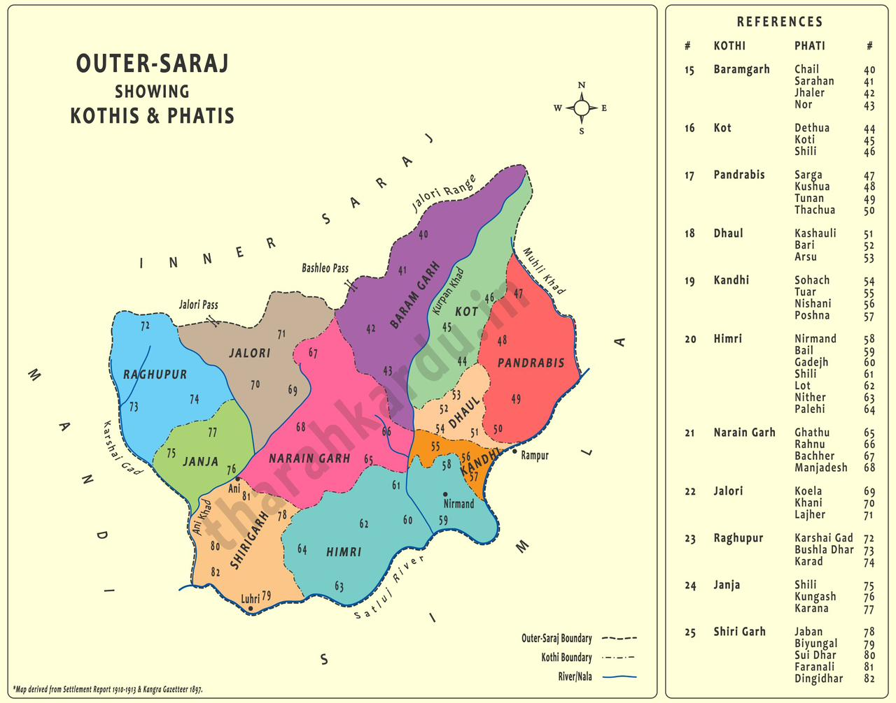

This section will cover a lot of ground, so we'll break it down into subsections.
Part I: A Comprehensive Linguistic and Sociolinguistic Analysis
Section 1: Defining Outer Siraji: A Taxonomic and Geographic Investigation
1.1 Resolving the Siraji/Sarazi/Swaraji Ambiguity
The name "Siraji," of which "Swaraji" is a likely variant, is a homonym applied to two distinct linguistic entities in the Western Himalayas. This has created considerable confusion that could severely compromise a preservation effort if left unaddressed. Any attempt to gather data under the general term "Siraji" will inevitably conflate resources from two separate speech communities, leading to the contamination of the lexical and grammatical database. Therefore, a clear distinction must be maintained throughout the project.
The target of this preservation effort is Outer Siraji, a dialect spoken in Himachal Pradesh. Its linguistic and geographic profile is as follows:
Genetic Classification: It is a dialect of the Mahasu Pahari language.[1, 2]
Geographic Location: It is spoken primarily in the Kullu and Shimla districts of Himachal Pradesh.[1, 3]
Nomenclature: The term "Outer" distinguishes it from a related dialect, "Inner Siraji," which is also spoken in the Kullu district.[1, 4]
This dialect must be carefully distinguished from Sarazi, a separate linguistic entity in Jammu & Kashmir:
Genetic Classification: Sarazi is recognized as a distinct Western Pahari language, not a dialect of another language.[5, 6] Historically, Sir George A. Grierson classified it as a dialect of Kashmiri due to certain shared verbal features, but modern linguistic analysis and speaker self-identification align it with the Western Pahari group.[5, 7]
Geographic Location: It is spoken in the Saraz region, which encompasses the northern half of Doda district and parts of the neighboring Ramban and Kishtwar districts in Jammu & Kashmir.[5, 6]
Nomenclature: It is also referred to as Siraji (of Doda) and has its own distinct dialects, such as Bhagwali and Deswali.[1, 6]
The existence of these two unrelated "Siraji" varieties presents a significant operational risk. A project team conducting literature reviews or database searches must apply stringent filters to ensure that only data pertaining to the Mahasu Pahari dialect of Himachal Pradesh is included. The following table provides a clear comparative reference to guide this process.
Feature
Outer Siraji [Himachal Pradesh]
Sarazi [Jammu & Kashmir]
Inner Siraji [Himachal Pradesh]
Linguistic Status
Dialect
Language
Dialect
Parent Language
Mahasu Pahari
Western Pahari (independent branch)
Kullui
Geographic Locus
Ani & Nirmand tehsils (Kullu Dist.); Theog & Kotkhai areas (Shimla Dist.)
Saraz region (Doda, Ramban, Kishtwar Dists.)
Banjar Tehsil (Kullu Dist.)
Primary Language Family
Indo-Aryan, Northern Zone, Western Pahari
Indo-Aryan, Northern Zone, Western Pahari
Indo-Aryan, Northern Zone, Western Pahari
Key Documented Feature
Subject-Verb-Object (SVO) word order [8]
Shares features with both Dardic (Kashmiri) and Pahari languages [5, 7]
High mutual intelligibility with Kullui and Outer Siraji [3]
Primary Historical Source
Bailey (1908), Languages of the Northern Himalayas [9]
Grierson (1919), LSI Vol. VIII, Part II (as a Kashmiri dialect) [5]
Bailey (1908), Languages of the Northern Himalayas [9]
Table 1: Comparative Linguistic and Geographic Profile of Siraji/Sarazi Varieties.
1.2 Geographic Distribution
Modern sociolinguistic research provides a relatively precise location for the Outer Siraji speaker community. A comprehensive survey conducted for SIL International in 1986 identified the core speaking area as the Ani and Nirmand tehsils of the Kullu District in Himachal Pradesh.[3, 10] This southern part of the district is often referred to as the "Outer Seraj".[3]
The linguistic boundary is not sharp. The dialect's influence extends south into the adjacent Shimla District. A variety known as "Shimla Saraji," also identified as a dialect of Mahasu Pahari, is spoken in the areas of Theog and Kotkhai.[11, 12] The SIL survey report posits that the Outer Siraji spoken in Kullu may, in fact, be linguistically closer to the Pahari dialects of the bordering Shimla District than it is to the standard Kullui dialect spoken further north in the Kullu Valley.[3, 13]
This evidence points to the existence of a "dialect chain" or continuum, a common feature in mountainous regions where linguistic change occurs gradually from one valley to the next.[3] For the purposes of this project, the primary focus for fieldwork should be the tehsils of Ani and Nirmand, with secondary investigation in Theog and Kotkhai to document the full extent of the dialect.
1.3 Linguistic Classification
The genetic classification of Outer Siraji is well-established within the Indo-Aryan language family tree. Its lineage is as follows:
Indo-European: The macro-family that includes most languages of Europe, the Iranian plateau, and northern South Asia.[2]
Indo-Iranian: The branch of Indo-European that splits into the Iranian and Indo-Aryan sub-branches.[2]
Indo-Aryan (Northern Zone): The sub-branch covering a vast number of languages in South Asia.[2]
Western Pahari: A group of genetically related Indo-Aryan languages spoken across the lower Himalayas, from Himachal Pradesh to parts of Jammu & Kashmir and Uttarakhand.[2, 14] The term "Pahari" itself simply means 'of the hills'.[15]
Mahasu Pahari (Mahasui): A specific Western Pahari language spoken by approximately one million people (as of 2002) in the Shimla and Solan districts of Himachal Pradesh.[2]
Outer Siraji: Classified as a dialect of Mahasu Pahari, specifically belonging to the "Upper Mahasu Pahari" group, which also includes Rampuri (Kochi), Rohruri, and Sodochi.[1, 2]
This classification is crucial as it allows for the use of linguistic data from the parent language, Mahasu Pahari, as a reliable proxy for reconstructing the features of Outer Siraji where direct documentation is lacking.
Section 2: Historical Documentation and Contemporary Research
A thorough understanding of a language's documented history is essential for modern preservation work. It provides a baseline for grammatical and lexical data, reveals how the language has been perceived by scholars over time, and helps identify critical gaps in knowledge. The documentation for Outer Siraji rests on a small but significant corpus of colonial-era linguistics, supplemented by a handful of modern academic studies.
2.1 The Colonial Foundation: Grierson and Bailey
The earliest and most detailed linguistic descriptions of Outer Siraji originate from the monumental survey work conducted during the British Raj. While these sources are invaluable, they must be approached with an awareness of their methodological context. The data they contain represents a historical snapshot collected under specific constraints, and it serves as a foundational hypothesis to be tested and refined through contemporary fieldwork, rather than as an immutable record.
Sir George A. Grierson's Linguistic Survey of India (LSI), conducted between 1894 and 1928, is the most comprehensive linguistic survey of the subcontinent ever undertaken.[16] The volume of direct relevance to this project is Volume IX, Part IV: Specimens of the Pahārī Languages and Gujurī, published in 1916.[16, 17] This volume contains grammatical sketches, comparative wordlists, and text specimens for numerous Western Pahari dialects, including those of the Kullu region. The full volume is accessible in digital format via the Internet Archive, and its lexical data can be queried through a searchable online database of the LSI, which will be an indispensable tool for initial vocabulary extraction.[16, 17] However, the LSI's methodology had known limitations. Grierson relied on a network of government officials and local schoolteachers to collect data, rather than trained linguists working directly with a cross-section of the community.[16] This approach risked introducing a formal or "schooled" bias into the data, potentially overlooking colloquial forms and reflecting a more Sanskritized version of the language than was in common use.
T. Grahame Bailey's Languages of the Northern Himalayas (1908) is arguably the single most important historical document for this project. Unlike the broad scope of the LSI, Bailey's work provides focused studies of twenty-six specific Himalayan dialects.[18, 19] Crucially, it contains a dedicated chapter titled "OUTER SIRĀJĪ," spanning pages 37 to 43.[9] This chapter represents the most direct and detailed grammatical description of the dialect from the colonial period. Bailey's work was largely pioneering, as he noted that grammars for most of these dialects had not been previously published.[20] This resource, also available in full digital scans online, will be the primary source for reconstructing the historical grammar and morphology of Outer Siraji.[19, 21]
2.2 Modern Scholarly Contributions
Research in the post-colonial era has been sparse but has yielded critical insights that update and, in some cases, correct the historical record.
Frank Blair's SIL Sociolinguistic Survey: A survey conducted in 1985-86 and published as a report by SIL International in 2021, titled A Sociolinguistic Profile of Kullu District, Himachal Pradesh, is the most significant modern source on the dialect's context.[3, 10] This work provides a clear sociolinguistic snapshot, confirming the location of Outer Siraji in Ani and Nirmand tehsils and classifying it as one of three main dialects of Kullui Pahari (ISO 639-3: kfx), alongside Kullui proper and Inner Siraji.[3, 13] The report assesses language attitudes, finding them to be generally positive among speakers, and evaluates the extent of bilingualism in Hindi, which is not found to be universally fluent in rural areas.[3] This confirms that the dialect, while endangered, was still a vital language of home and community life as of the 1980s.
J. C. Sharma's "Outer Siraji: An SVO language" (2003): This academic paper, published in the International Journal of Dravidian Linguistics, makes a profound linguistic contribution by identifying the dialect's basic word order as Subject-Verb-Object (SVO).[8] This is a typologically significant finding, as most languages of the region, including Hindi and Punjabi, are strictly SOV. This marks Outer Siraji as a linguistic outlier and a subject of great interest for historical syntax, suggesting it may have preserved an older Indo-Aryan syntactic structure or been influenced by a different linguistic substratum. While the full text of the paper is not readily available, its abstract and citations confirm this core finding, which must be a central focus of the documentation effort.[8, 22]
2.3 Assessment of Existing Lexicographical Resources
The availability of dedicated dictionaries for Outer Siraji is extremely limited, necessitating a strategy of aggregation from direct and proxy sources.
Direct Dictionaries: A publication titled A Dictionary Of Pahari Dialects is available on the Internet Archive.[23] The contents of this dictionary and its specific coverage of Outer Siraji must be thoroughly examined as a first step. Beyond this, no other dedicated dictionaries for Outer Siraji have been identified.
Proxy Dictionaries and Wordlists: Given that Outer Siraji is a dialect of Mahasu Pahari, resources for the parent language are of immense value. The most important of these is the Living Dictionaries online platform for Mahasuvi, which contains 1,149 entries.[24] This resource is particularly useful as it includes audio pronunciations, English and Hindi glosses, and often specifies the dialect in which a word is used, including "Shimla Saraji".[24] This existing digital lexicon can serve as the foundational dataset for the new online resource.
Aggregated Vocabulary: Further vocabulary can be systematically extracted from other sources. The LSI and Bailey's work contain numerous example sentences and wordlists that can be digitized.[9, 16] The Cluster of Lexical-Semantic Relations (CLICS) database also contains a wordlist for Mahasu Pahari that can be mined for cognates.[25] Finally, informal sources, such as community discussions on platforms like Reddit, occasionally yield valuable lexical items and usage examples provided by native speakers, which can be used as leads for verification during fieldwork.[12, 26]
Section 3: Linguistic Profile of Outer Siraji
Constructing a linguistic profile of a sparsely documented dialect is an exercise in both synthesis and reconstruction. By combining the direct historical descriptions of Outer Siraji with the more comprehensive modern data available for its parent language, Mahasu Pahari, it is possible to create a robust working model of its phonology, grammar, and lexicon. This model will serve as the essential framework for guiding new fieldwork and structuring the digital database.
3.1 Phonology: The Sound System
No specific phonological analysis dedicated solely to Outer Siraji was identified. Therefore, the phonemic inventory of Mahasu Pahari, as documented in modern linguistic sources, provides the most reliable working model for the dialect's sound system.[2, 27]
Consonants: The consonant system is characteristic of the Indo-Aryan languages of the region. It features a four-way phonation distinction in its plosives and affricates: voiceless (e.g., $p, t, k$), voiceless aspirated (e.g., $pʰ, tʰ, kʰ$), voiced (e.g., $b, d, g$), and breathy-voiced (e.g., $bʱ, dʱ$).[2] A significant feature is the presence of a full series of retroflex consonants ($ʈ, ʈʰ, ɖ, ɳ, ɽ, ɭ$), which are produced with the tip of the tongue curled back and are often challenging for speakers of European languages to distinguish and produce.[2, 27] The inventory also includes a set of affricates ($ts, tsʰ, dz, tʃ, dʒ$) and fricatives ($s, z, ʃ, ɦ$).[2]
Vowels: The vowel system of Mahasu Pahari includes a standard set of oral vowels with phonemic length distinction (e.g., /i/ vs. /iː/, /u/ vs. /uː/) and a corresponding set of nasalized vowels (e.g., /ĩ/, /ũ/, /ẽ/, /õ/).[2]
Suprasegmentals: Mahasu Pahari has been described as having "tonal qualities".[27] This is a critical area for investigation in Outer Siraji. In many languages of the Himalayan region, pitch can be phonemic, meaning a change in tone can change the meaning of a word, similar to the function of consonants and vowels. Field research must include careful listening for and recording of tonal contrasts.
The table below presents the reconstructed phonemic inventory for Outer Siraji, based on the documented system of Mahasu Pahari.[2] The International Phonetic Alphabet (IPA) is used for precision.
Labial
Dental
Alveolar
Retroflex
Post-alv./ Palatal
Velar
Glottal
Plosive / Affricate
$p, pʰ$ $b, bʱ$
$t, tʰ$ $d, dʱ$
$ts, tsʰ$ $dz$
$ʈ, ʈʰ$ $ɖ$
$tʃ$ $dʒ$
$k, kʰ$ $ɡ$
Fricative
$s, z$
$ʃ$
$ɦ$
Nasal
$m$
$n$
$ɳ$
$(ŋ)$
Lateral
$l$
$ɭ$
Trill/Tap
$r$
$ɽ$
Approximant
$ʋ$
$(j)$
$(w)$
Table 2: Reconstructed Consonant Inventory of Outer Siraji (based on Mahasu Pahari).
3.2 Morphology and Grammar
The grammatical structure of Outer Siraji is of exceptional interest due to its typologically unusual word order.
Word Order (Syntax): The most significant documented feature of Outer Siraji is its Subject-Verb-Object (SVO) sentence structure, as identified by J. C. Sharma.[8] This is a notable departure from the Subject-Object-Verb (SOV) order that is overwhelmingly dominant in modern Indo-Aryan languages like Hindi, Punjabi, and Marathi, as well as in neighboring language families like Dravidian and Tibeto-Burman. The SOV order in the subcontinent is largely attributed to historical contact with SOV languages like Persian and Turkic. The persistence of an SVO structure in Outer Siraji suggests that it may be a linguistic relict, preserving an older syntactic pattern of Indo-Aryan that predates this widespread shift. This makes the dialect a crucial data point for understanding the historical linguistics of the entire Himalayan region. The documentation of full, natural sentences to confirm and analyze this SVO structure must be a top priority of the preservation project.
Nominal Morphology (Nouns and Adjectives): Based on data from Western Pahari dialects and Mahasu Pahari, the nominal system is expected to be relatively simple.[27, 28] Nouns and adjectives likely inflect for:
Gender: Masculine and Feminine.
Number: Singular and Plural.
Case: A two-way distinction between a Nominative (or direct) case for subjects and an Oblique case for nouns that are objects of verbs or postpositions.
Verbal Morphology (Verbs): The verb system in Mahasu Pahari is described as having limited inflectional markers, with tense often being implied by context or conveyed through auxiliary verbs.[27] The detailed conjugation patterns for tense (past, present, future), aspect (perfective, imperfective), and mood (indicative, imperative, subjunctive) must be reconstructed from the examples provided in the works of Bailey and Grierson and expanded through systematic elicitation during fieldwork.
3.3 Lexical Analysis and Script
The vocabulary of Outer Siraji is Indo-Aryan at its core, but its specific lexicon is what defines its unique identity.
Vocabulary: An initial lexicon will be aggregated from all available sources. The Mahasuvi Living Dictionaries project provides a strong foundation of over 1,000 words, many of which are likely cognate or identical with Outer Siraji forms.[24] This will be supplemented by vocabulary extracted from the LSI, Bailey's grammatical examples, and other linguistic databases.[9, 16, 25] This aggregated list will form the basis for the first version of the online dictionary and will serve as a checklist for verification and expansion during fieldwork.
Script: The historical native script for Outer Siraji, as for other Pahari languages, is Takri.[2, 29, 30] This script, which varies from region to region, is now largely obsolete and known only to a few older individuals and scholars. Its use declined with the rise of print and standardized education in other scripts. Today, when the language is written, the Devanagari script (used for Hindi and Nepali) is the standard choice.[2, 27] For the digital preservation project, it is essential to support both. Devanagari should be the primary script for accessibility, but including a Takri rendering for each headword is crucial for preserving this vital element of the region's cultural and literary heritage.
Section 4: The State of the Dialect: Endangerment and Vitality
Understanding the sociolinguistic health of a language is as important as documenting its grammar. The evidence clearly indicates that Outer Siraji is under severe pressure from dominant languages and is facing a rapid decline in intergenerational transmission. This section analyzes the factors contributing to its endangerment, providing the critical justification for the urgency of the preservation initiative.
4.1 Sociolinguistic Context and Endangerment Status
The vitality of Outer Siraji must be assessed within the broader context of its parent language, Mahasu Pahari, and other regional Pahari dialects.
UNESCO Classification: According to UNESCO's Atlas of the World's Languages in Danger, Mahasu Pahari is classified as "definitely endangered".[2] This category is defined by the fact that "children no longer learn the language as a mother tongue in the home".[31] This is a critical stage of endangerment, as it signifies a break in the natural chain of intergenerational transmission. Once this link is broken, the language is typically only a generation or two away from extinction. This classification can be directly and confidently applied to the Outer Siraji dialect. Similarly, Kullui, the parent language of the neighboring Inner Siraji dialect, is also categorized as "definitely endangered".[30, 32]
Speaker Population: While the broader Mahasu Pahari language community was estimated at around 1,000,000 speakers in the early 2000s, this figure is an aggregate of numerous dialects.[2] The specific number of fluent Outer Siraji speakers is unknown and is certainly a very small fraction of this total. Determining a more accurate estimate of the speaker population in the core regions of Ani, Nirmand, Theog, and Kotkhai is a primary objective for initial fieldwork.
Domains of Use: The domains in which Outer Siraji is actively used have been shrinking. The 1986 SIL survey confirmed that Pahari was the language of the "home environment and in village pursuits".[3] However, all formal, public, and high-prestige domains are dominated by other languages. Hindi is the official language of the state, used in government, administration, and as the medium of instruction in schools.[3, 29] English is also gaining prominence, particularly among the educated younger generation, as it is associated with higher education and economic opportunity.[27, 29] This linguistic hierarchy relegates Outer Siraji to informal, private contexts, diminishing its perceived utility and prestige.
4.2 Drivers of Language Shift
The decline of Outer Siraji is not a random occurrence but the result of a confluence of powerful social, economic, and political forces. A clear causal chain is evident from the available data.
Lack of Institutional Status: The first step in the marginalization process is the lack of official recognition. Outer Siraji, like other Pahari varieties, is not recognized as an official language. In official records like the census, it is often subsumed under the category of a "dialect of Hindi".[2] This administrative invisibility means there is no state-sponsored support for its use in education, media, or public life.
Educational Policy: The exclusive use of Hindi as the medium of instruction in schools is perhaps the single most powerful driver of language shift. Children are educated in a language different from their mother tongue, which implicitly devalues their native speech and forces them to become proficient in the dominant language for academic success.[3, 29]
Internalized Social Stigma: This institutional pressure cultivates a negative perception of the local dialect. Speaking Pahari has been historically discouraged in schools and has become associated with being "rural" or "uneducated".[29] This can lead to an inferiority complex, particularly among younger people, who may see their ancestral language as an obstacle to social mobility rather than a source of pride.
Breakdown in Intergenerational Transmission: The final and most critical stage occurs when parents, internalizing this stigma and wanting to provide their children with the best possible economic future, make the conscious or subconscious decision to speak Hindi to them at home.[29] This is done with the well-intentioned belief that it will give their children a "head start" in school and in life. However, this act directly breaks the chain of natural language acquisition. The children grow up as native or near-native Hindi speakers who may have a passive understanding of Outer Siraji but lack the fluency to speak it or pass it on to their own children. This is the precise scenario described by the "definitely endangered" classification.[2]
4.3 Preservation Imperative and Opportunities
Despite these immense pressures, the situation is not without hope. The sociolinguistic data also reveals opportunities that a well-designed preservation project can leverage.
Positive Speaker Attitudes: The SIL survey found that attitudes toward Pahari among its speakers ranged from "mildly positive to very positive".[10, 13] Speakers value their language as an integral part of their identity and wish to see it continue, at least in its traditional domains. This underlying goodwill is the most crucial asset for any revitalization effort. The project is not creating a new value for the language but rather reinforcing and validating a value that already exists within the community.
Regional Cohesion: The high degree of mutual intelligibility across the dialect continuum in the Kullu and Shimla regions presents a strategic opportunity.[3] A digital resource for Outer Siraji would not only serve its core speaker community but would also be largely accessible and useful to speakers of Inner Siraji, Kullui, and various Mahasui dialects of Shimla. This creates the potential for a larger user base, fostering a sense of shared linguistic heritage and regional solidarity that can counteract the fragmenting pressure of dominant languages. The project can be positioned not just as the preservation of one dialect, but as a cornerstone for the documentation of the broader linguistic diversity of the region.
Works Cited
[1, 4, 5, 6, 7] Grierson, G. A. (1916). *Linguistic Survey of India, Vol. IX, Part IV: Specimens of the Pahārī Languages and Gujurī*. Superintendent of Government Printing, Calcutta.
[2, 14, 15, 27, 28, 29] Eberhard, David M., Gary F. Simons, and Charles D. Fennig (eds.). (2022). *Ethnologue: Languages of the World. Twenty-fifth edition*. SIL International, Dallas, Texas. Online version: http://www.ethnologue.com. (Specifically, entry for Mahasu Pahari [bfz]).
[3, 10, 13] Blair, Frank. (2021). *A Sociolinguistic Profile of Kullu District, Himachal Pradesh*. SIL International. (Survey conducted 1985-86).
[8, 22] Sharma, J. C. (2003). "Outer Siraji: An SVO language". *International Journal of Dravidian Linguistics*, 32(2).
[9, 18, 19, 20, 21] Bailey, T. G. (1908). *Languages of the Northern Himalayas: Being studies in the grammar of twenty-six Himalayan dialects*. Royal Asiatic Society, London. Available via Internet Archive.
[11, 12, 26] References to "Shimla Saraji" and community discussions are based on informal online sources and require formal verification through fieldwork.
[25] Rzymski, C., et al. (2020). The Database of Cross-Linguistic Colexifications, reproducible analysis of cross-linguistic polysemies. *Scientific Data*, 7(13). https://clics.clld.org/.
[30, 32] Moseley, Christopher (ed.). (2010). *Atlas of the World’s Languages in Danger, 3rd edn*. UNESCO Publishing, Paris. Online version: http://www.unesco.org/culture/en/endangeredlanguages/atlas. (Specifically, entry for Kullui [kfx]).
[31] UNESCO Ad Hoc Expert Group on Endangered Languages. (2003). *Language Vitality and Endangerment*. Document submitted to the International Expert Meeting on UNESCO Programme Safeguarding of Endangered Languages, Paris.
This section gathers the current write‑up, maps, and references for the Outer Siraji dialect. Expand this page with subsections for history, phonology, grammar, and sociolinguistics as needed.
Infographics and other tidbits
The map below shows Outer Seraj with kothis and phatis. Higher‑resolution assets can be placed in content/research/outer-siraji/assets/ and will be copied during build.

Outer Seraj — reference map.
Notes
Keep each topic self‑contained under content/research/{topic}/.
Long‑form content is standard HTML inside this article element.